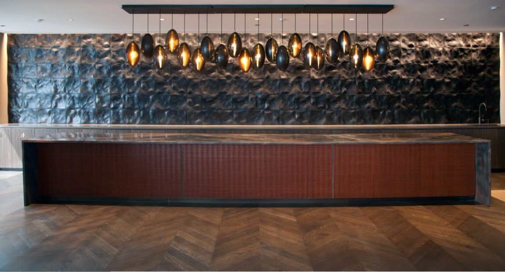
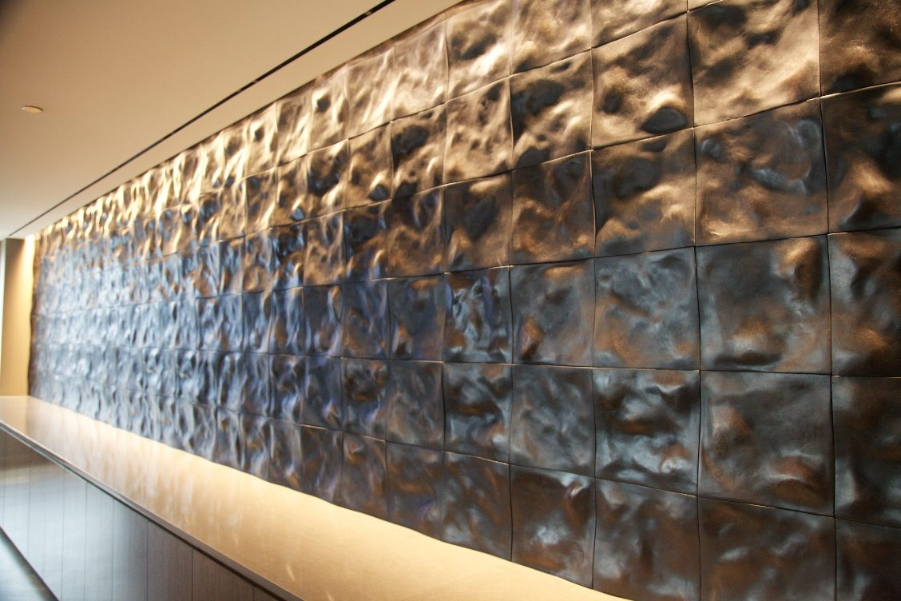
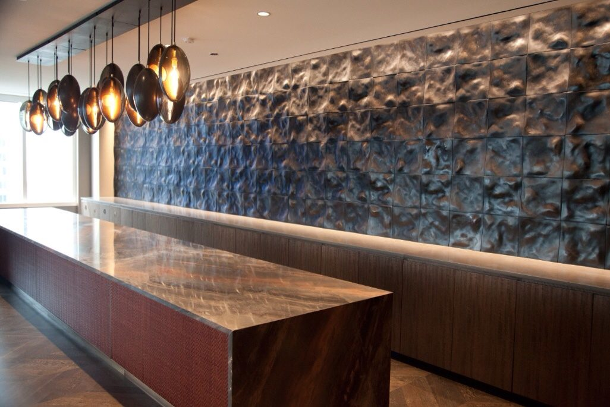
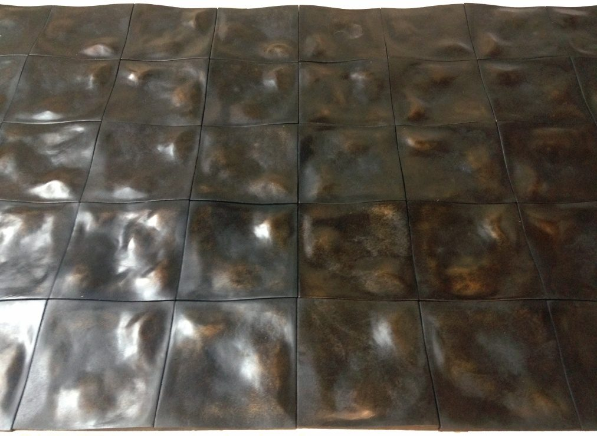
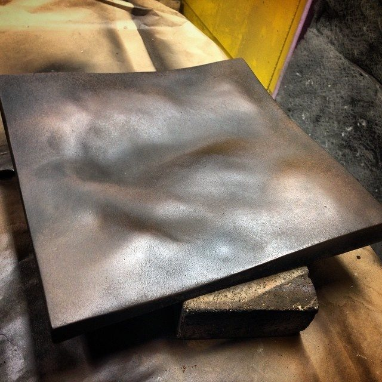
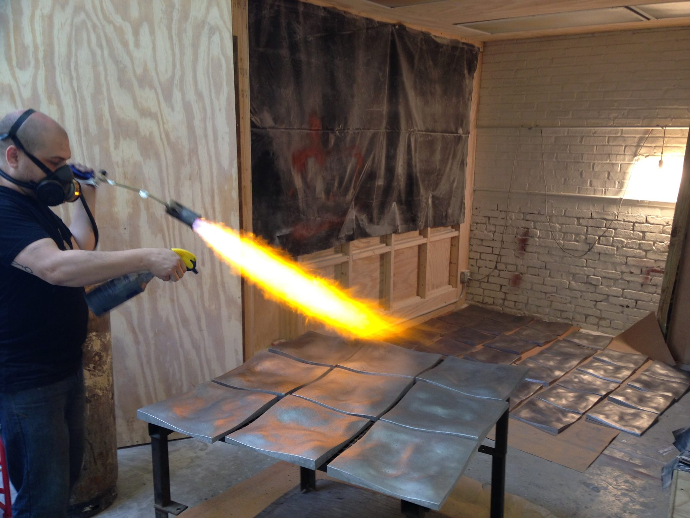
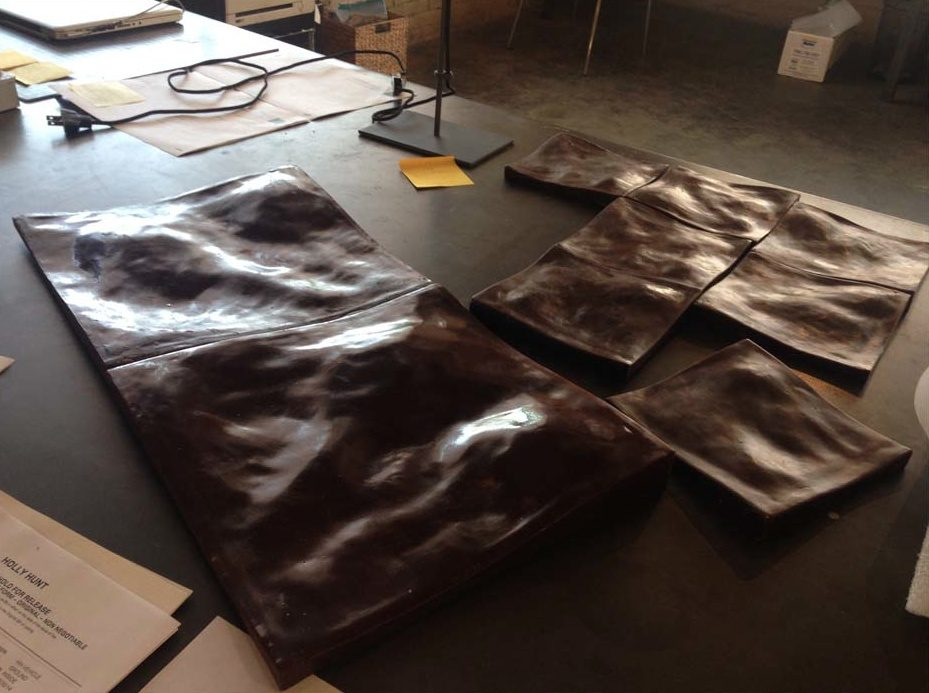
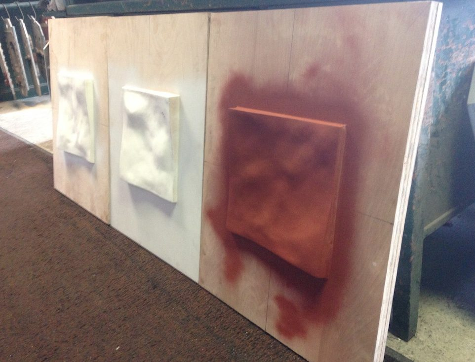

Architectural / 2014
Cast Aluminum Tessellation Wall
Gary Lee Partners
A cast aluminum relief wall built from a repeating tile, developed for Gary Lee Partners.
A relief wall running the length of the counter in a Gary Lee Partners interior, made as a tessellation so that one repeating cast tile could cover the full run without reading as a grid. The tile was modeled digitally, cast in aluminum, then finished and patinated by hand.
Working from a single repeating unit kept tooling and lead time in check at architectural scale. It is an early version of the approach the studio later brought to the parametric cast feature wall at Uber Freight.
Details
- Year
2014 - Location
Chicago, IL - Category
Architectural - Materials
Cast aluminum, hand applied patina
Credits
- Gary Lee Partners
- Developed and fabricated by Ben Stagl
Index







